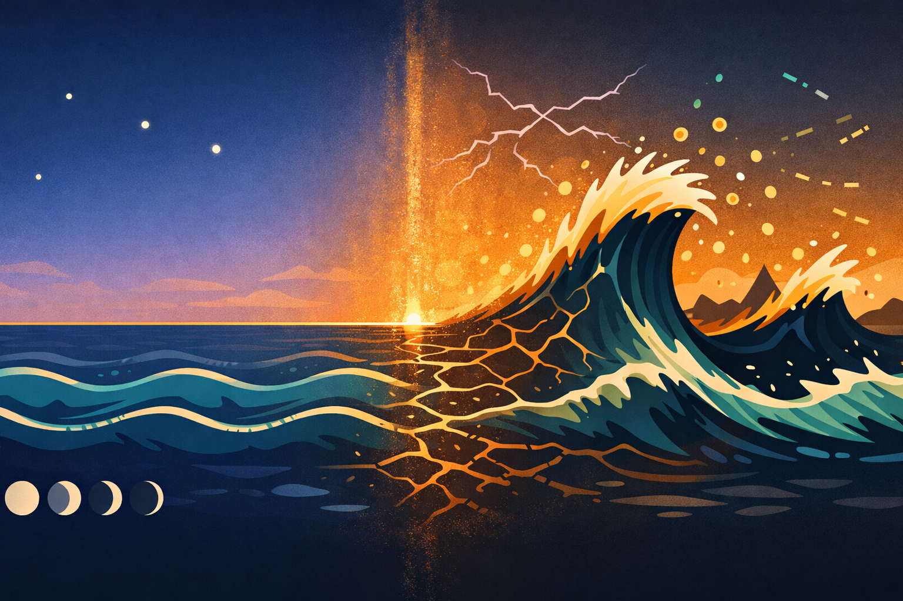
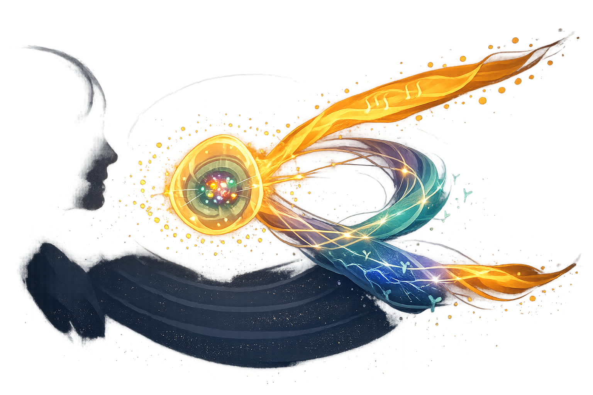
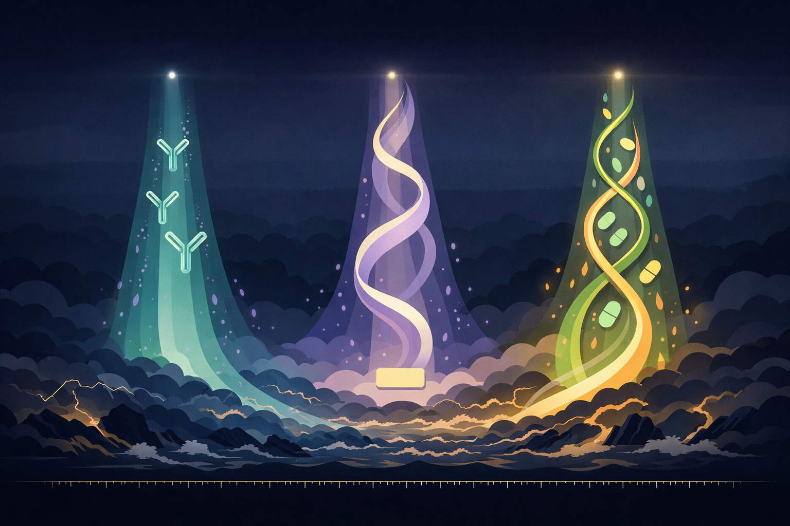

By Rustam Iuldashov
30 years lived experience with chronic migraine | Sources: 30 peer-reviewed references including Neurology (SWAN, n=3,302), Headache (AMPP, n=3,664), Mayo Clinic Proceedings (DREAMS, n=5,708), The Lancet (SKYLIGHT 1, n=501) | Last updated: March 2026
Medical Review: This content is based on 30 peer-reviewed sources including Neurology, Headache, Mayo Clinic Proceedings, The Lancet, Post Reproductive Health, Maturitas, Neurology and Therapy, and other authoritative journals.
Important Notice: This article is for informational purposes only and does not replace professional medical advice. Always consult a healthcare professional before starting or changing any treatment.
Key Takeaways
- Perimenopause nearly doubles migraine prevalence (16.7% → 31%) and significantly increases the risk of chronic migraine (AMPP, n=3,664)[7]
- Sleep disruption, anxiety, depression, weight gain, and rising histamine all lower the migraine threshold simultaneously — the triggers multiply, not add
- Falling progesterone removes allopregnanolone, the brain’s natural anxiolytic — explaining the 2 a.m. anxiety and insomnia that accompany perimenopausal migraine[8]
- Surgical menopause worsens migraine in 67% of women and should never be performed to treat migraine (systematic review + MOA-2, n=1,243)[12][14]
- Transdermal HRT (patches/gel) is preferred over oral for migraineurs; HRT does not contraindicate migraine with aura, unlike oral contraceptives — but new or worsening aura on HRT requires immediate reassessment[19]
- Migraine + persistent hot flashes together increase cardiovascular risk by 1.5–1.7× — both need active management (CARDIA, Menopause 2024)[25]
- New NK3 receptor antagonists (fezolinetant, elinzanetant) treat hot flashes via the same hypothalamic circuitry implicated in migraine — a shared therapeutic frontier[29][30]
- CGRP antibodies show comparable efficacy in older patients; AHS 2024 now recommends them as first-line preventive[26][27]
- Track migraine alongside vasomotor symptoms for 3–6 months — pattern recognition is the diagnostic foundation
For twenty years, Laura knew her migraine like a landlord knows a tenant. Day twenty-six, the shadow behind her left eye. Day twenty-eight, the full siege. Two days in darkness, then reprieve — until next month. Brutal, but predictable. She could plan around it.
At forty-four, the schedule disintegrated.
Attacks arrived on day nineteen. Then day twelve. Then three times in one week, without pattern or warning — accompanied by night sweats that jolted her awake at 2 a.m. and a creeping anxiety she had never known. Her triptan, faithful for fifteen years, quit halfway through. Her neurologist called it perimenopause. Laura called it losing control.
She is not unusual. Roughly 30% of women with migraine experience their worst disease during the menopausal transition.[1] What was once predictable agony becomes erratic, more frequent, harder to treat, and tangled with a constellation of symptoms that lower the migraine threshold from every direction at once.[2]
This is the migraine-menopause storm. It plays by its own rules.
The Earthquake Inside
As we explored in The Body Keeps the Calendar, the trigger for menstrual migraine is not low estrogen. It is the speed of the fall. During reproductive years, that fall follows a pattern the brain learns to expect — steep, but rhythmic.
Perimenopause destroys the rhythm.
Picture the difference. During reproductive years, estrogen follows a shape your brain has learned to predict: a gentle rise after menstruation, a peak at ovulation, a plateau in the luteal phase, then a steep but familiar drop before the next period. The same wave, month after month. Now picture perimenopause: the wave loses its shape. One month, estrogen surges to twice its normal peak — then plummets within days. The next month, ovulation doesn’t happen at all, and estrogen drifts at low levels for weeks. The month after, a normal-looking cycle returns, then vanishes again. The migraine brain, wired to react to falling estrogen, is now facing drops it can’t anticipate from heights it has never encountered.
Over four to eight years, typically beginning in the mid-forties, the orderly cycle of estrogen and progesterone collapses.[3] Estrogen doesn’t simply decline — it spikes unpredictably to levels higher than any normal cycle, then crashes to near-menopausal depths, sometimes within days.[4] If the menstrual drop was a cliff, perimenopause is an earthquake: the ground itself becomes unreliable.
The numbers confirm it. The SWAN cohort, tracking 3,302 women through midlife, documented significantly higher estrogen fluctuations in women with migraine during late perimenopause compared with premenopausal controls.[5] A community-based study of 1,436 Taiwanese women found that migraine prevalence nearly doubled — from 16.7% in premenopausal women to 31% in late perimenopause.[6]
The clinical toll is steeper still. The American Migraine Prevalence and Prevention Study (AMPP, n=3,664) found that perimenopause significantly increased the risk of high-frequency headache — more than ten days per month — even after adjusting for age, BMI, medication use, and psychiatric comorbidity.[7] For many women, this means crossing the line from episodic to chronic migraine. Not a bad month. A new baseline.
And progesterone — long overlooked — plays its own part. It is often the first hormone to decline, sometimes years before estrogen becomes erratic.[8] The brain converts progesterone into allopregnanolone, a neurosteroid that acts directly on GABA-A receptors — the same system targeted by anti-anxiety medications.[8] When progesterone falls, this natural anxiolytic disappears with it. The 2 a.m. wakefulness, the creeping dread, the sense that something is wrong but you can’t name it — these are not character flaws. They are neurochemistry.

The Siege
Hormonal chaos alone would be hard enough. But perimenopause doesn’t attack on a single front.
Sleep fractures first. Hot flashes and night sweats shatter sleep architecture, and the SWAN study identified sleep disruption as one of the most consistent features of the menopausal transition.[9] Poor sleep is among the strongest migraine triggers — creating a vicious cycle where worse sleep produces more attacks, which further destroy sleep.
Mood destabilizes. A SWAN analysis found that the risk of clinically significant depressive symptoms rose during the transition, independent of prior history.[10] Both depression and anxiety are established migraine amplifiers. They don’t just coexist with migraine — they worsen its frequency and severity through shared serotonergic and noradrenergic pathways.
Weight shifts the chemistry. Menopausal weight gain drives the release of inflammatory mediators and substance P from adipose tissue, while CGRP — the neuropeptide at the center of migraine biology — is highly expressed in obese individuals.[11] Researchers describe the result as a vicious cycle of pain, where inflammation from excess weight continuously activates the trigeminal system.
And there is one more amplifier, often invisible. Estrogen stimulates mast cells to release histamine, while progesterone normally restrains this process. During perimenopause, with estrogen spiking erratically and progesterone in decline, the histamine load rises — contributing to inflammation, nasal congestion, flushing, and lowering the migraine threshold further still.[8][11] For women who notice their attacks arriving with itchy skin, sinus pressure, or flushing that doesn’t feel like a typical hot flash, histamine may be part of the picture.
Each factor alone can trigger a migraine. Together, they don’t add up. They multiply. The perimenopausal migraine attack is not hitting a single target. It is landing on a system where the alarm threshold has been lowered from every direction simultaneously.
The Dangerous Shortcut
A persistent belief — shared by some patients and even some clinicians — holds that removing the ovaries should eliminate the hormonal trigger. No ovaries, no estrogen swings, no menstrual migraine. The logic seems airtight.
The evidence says the opposite.
A systematic review examining menopause type found that migraine improved in 67% of women after spontaneous menopause but worsened in 67% after surgical menopause.[12] A retrospective study of 164 postmenopausal women confirmed it: worsening occurred almost exclusively after surgical menopause; improvement only after spontaneous.[13]
The most compelling data come from the Mayo Clinic Cohort Study of Oophorectomy and Aging (MOA-2). Researchers followed 1,243 women who underwent premenopausal bilateral oophorectomy, matched against 1,415 controls. Surgical removal of the ovaries was associated with an increased risk of developing new-onset migraine — particularly in women over 45 at the time of surgery.[14]
The explanation follows the same principle that governs menstrual migraine, amplified to its extreme. Bilateral oophorectomy causes an abrupt, catastrophic loss of ovarian hormones — the steepest possible estrogen cliff. The hypothalamus, which orchestrates both the menstrual cycle and migraine, goes into overdrive.[15] Even subsequent estrogen replacement cannot fully replicate the natural hormonal environment.
67% improvement after spontaneous menopause vs. 67% worsening after surgical menopause[12]
n=2,658 in MOA-2: oophorectomy associated with new-onset migraine, especially in women >45[14]
Consensus: surgical menopause should never be performed to reduce migraine[16]
The HRT Paradox
Hormone replacement therapy is the most effective treatment for hot flashes, night sweats, and other vasomotor symptoms. Its relationship with migraine is more complicated — but the complications have solutions.
Two large cross-sectional studies found that HRT use was associated with a significant increase in migraine risk.[17] Read in isolation, that sounds like a reason to avoid it. Read with nuance, the picture inverts.
The route of delivery changes everything.
Oral estrogen passes through the liver, producing serum fluctuations — the exact hormonal pattern that triggers migraine. Transdermal estrogen (patches or gel) bypasses first-pass hepatic metabolism and delivers stable levels.[18] Professor Anne MacGregor, whose research shaped both the International Headache Society’s diagnostic criteria for menstrual migraine and the British Menopause Society’s HRT guidance, recommends transdermal estrogen in the lowest effective dose as the preferred approach for women with migraine.[19]
A critical distinction: unlike combined oral contraceptives, which are contraindicated in women with migraine with aura due to stroke risk, HRT uses natural estrogen at physiological doses. Women with aura can use HRT — but transdermal delivery is strongly preferred, because oral estrogen is more likely to trigger or worsen aura.[19] One important caveat: if aura appears for the first time or becomes more frequent after starting HRT, this requires immediate reassessment — typically a dose reduction or switch to a lower-dose transdermal preparation, in close consultation with a neurologist.[15][19]
The progestogen component adds another layer. Cyclical progestogens produce a monthly withdrawal bleed — and can trigger migraine the same way the natural cycle does. Continuous progestogens, particularly via a levonorgestrel intrauterine system (LNG-IUS), maintain steady hormone levels and avoid the withdrawal effect entirely.[20] For some perimenopausal women, the combination of transdermal estrogen and a hormonal IUD can suppress ovarian cycling altogether — eliminating both the estrogen cliffs and the prostaglandin surges that independently drive attacks.[21]
But timing matters. Starting HRT too early in perimenopause, when endogenous estrogen is still swinging wildly, can worsen migraine by layering exogenous instability on top of internal chaos.[19] The art is in the timing, the route, and the dose — which is why this decision requires a clinician who understands both migraine and menopause.
Burning Together
Many women with migraine notice something during perimenopause that their doctors may not connect: their worst migraines arrive alongside their worst hot flashes. A 2023 Mayo Clinic study of 5,708 midlife women confirmed the link.[22] Women with migraine reported significantly more severe vasomotor symptoms, even after adjusting for menopause status, BMI, smoking, and mood disorders.
The reason is anatomical. Both migraine and hot flashes originate in the hypothalamus. Both involve KNDy neurons — a population of hypothalamic cells containing kisspeptin, neurokinin B, and dynorphin — that regulate temperature and are modulated by estrogen.[23] CGRP, the neuropeptide at the heart of migraine, is also involved in vasomotor regulation. Postmenopausal women with hot flashes show elevated systemic CGRP levels.[24]
The convergence has consequences beyond discomfort. A 2024 study in Menopause, using data from the CARDIA cohort (n=1,954), found that women with both migraine and persistent vasomotor symptoms were 1.5 times as likely to develop heart disease and 1.7 times as likely to have a stroke — independent of traditional cardiovascular risk factors.[25] Neither condition alone produced the same elevated risk. The combination reveals a shared vascular vulnerability that demands management of both conditions, not just one.
This shared biology has opened a new therapeutic frontier. In 2023, the FDA approved fezolinetant (Veozah) — the first non-hormonal medication to treat menopausal hot flashes by blocking the neurokinin 3 (NK3) receptor on KNDy neurons.[29] In 2025, elinzanetant (Lynkuet), a dual NK1/NK3 antagonist, followed.[30] Because these drugs target the same hypothalamic circuitry implicated in both hot flashes and migraine, researchers are investigating whether NK3 antagonists might benefit migraine as well — a hypothesis that is biologically plausible but not yet tested in migraine-specific trials.[29] If confirmed, it would mark the first treatment designed around the shared neurobiology of two conditions that have been managed in separate clinics for decades.

⚠️ When to See a Doctor
Your migraines have become noticeably more frequent, severe, or harder to treat as your cycle becomes irregular — this may signal the perimenopausal transition and warrants a review of your treatment plan.
You experience migraine with aura and are considering or currently using hormone replacement therapy — the type, dose, and delivery route must be carefully matched to your migraine subtype.
Migraine attacks last longer than 72 hours, change in character, or are accompanied by new neurological symptoms such as weakness, confusion, or speech difficulty — seek urgent medical evaluation. These may indicate a condition other than migraine.
You are considering or being offered surgical removal of your ovaries (oophorectomy) and have a history of migraine — discuss the potential for migraine worsening with both your gynecologist and a headache specialist before proceeding.
You experience both frequent migraines and persistent hot flashes — this combination is associated with increased cardiovascular risk and benefits from coordinated care.
This article is a starting point for conversation with your doctor, not a replacement for medical care.

What Works Now
The treatments that have transformed migraine care in the past decade work across the menopausal transition — and some work double duty.
The most targeted option: anti-CGRP monoclonal antibodies — erenumab, fremanezumab, galcanezumab, and eptinezumab — were studied primarily in younger populations, but a retrospective analysis from the Cleveland Clinic (n=189) found comparable efficacy and tolerability in patients over 65.[26] The APPRAISE trial (n=621) showed that erenumab achieved a 50% or greater reduction in monthly migraine days in 56% of patients versus 16% on traditional oral preventives. The American Headache Society’s 2024 consensus statement now recommends CGRP-targeting therapies as a first-line preventive option.[27]
The double-duty approach: for women battling both migraines and hot flashes, certain medications address both. Venlafaxine and escitalopram treat vasomotor symptoms and show migraine-preventive properties. Gabapentin, effective for hot flashes, may also reduce migraine frequency.[28] These are not the most powerful migraine preventives alone — but for the woman caught between two storms, a single medication that addresses both reduces pill burden and avoids the polypharmacy that grows riskier with age.
The hormonal path: for women who are candidates, transdermal estrogen combined with a levonorgestrel IUD can address the root cause — estrogen volatility — while simultaneously managing vasomotor symptoms, heavy bleeding, and providing contraception during late perimenopause. This approach requires individualized assessment, particularly regarding aura history and cardiovascular risk, but when it fits, it treats the mechanism rather than the symptoms.[19][21]
After the Storm
For most women, the chaos eventually passes. Once estrogen levels stabilize in post-menopause — typically two to three years after the final period — migraine frequency and severity improve significantly.[12] The hormonal trigger that has driven attacks since menarche finally goes quiet.
But not for everyone.
Non-hormonal triggers that were always present — stress, disrupted sleep, weather changes, alcohol, skipped meals — remain. For some women, these triggers intensify after menopause, because years of chronic attacks have lowered the brain’s pain threshold in ways that don’t automatically reset.[19]
And some women continue to experience cyclical migraine patterns for years after their last period. The hypothalamic hormones that orchestrated the menstrual cycle take time to fully settle. MacGregor notes that in some cases, cyclical attacks can persist ten or more years after menopause.[19]
The most important practical step is unchanged from the menstrual years: track. A dual diary — recording migraine days alongside menstrual irregularities, hot flashes, sleep quality, and mood — becomes even more valuable when the cycle is unpredictable. Patterns that seem random often reveal themselves across three to six months of careful documentation. That documentation gives your doctor the data to distinguish hormonal attacks from other triggers, to time treatments precisely, and to choose between hormonal and non-hormonal strategies with confidence.
Your migraine is not static. Your body is rewriting its rules. Your treatment plan should be rewriting its rules too.
⚕️ Important Medical Disclaimer
This article is for informational and educational purposes only and does not constitute medical advice, diagnosis, or treatment. The author, Rustam Iuldashov, is not a licensed physician, neurologist, or healthcare professional. He is a patient advocate with 30 years of personal experience living with chronic migraine.
All clinical claims in this article are sourced from peer-reviewed research published in indexed medical journals. Study designs and sample sizes are noted where applicable.
Hormone replacement therapy, CGRP-targeting medications, NK3 receptor antagonists, and decisions regarding surgical menopause all carry individualized risks and benefits. Always consult a qualified healthcare provider — ideally one with expertise in both headache medicine and menopause — for questions about your individual treatment plan.
This content was last reviewed for accuracy in March 2026.
References
- Pavlović JM. “The impact of midlife on migraine in women: summary of current views.” Women’s Midlife Health. 6:11 (2020). doi:10.1186/s40695-020-00059-8. Study design: Review.
- Allais G, Chiarle G, Bergandi F. “Migraine in perimenopausal women.” Neurological Sciences. 36(Suppl 1):S79–S83 (2015). Study design: Review.
- Burger HG, Dudley EC, Hopper JL, et al. “Prospectively measured levels of serum follicle-stimulating hormone, estradiol, and the dimeric inhibins during the menopausal transition.” Journal of Clinical Endocrinology & Metabolism. 84(11):4025–4030 (1999). Study design: Prospective cohort. n=150.
- Tepper PG, Randolph JF, McConnell DS, et al. “Trajectory clustering of estradiol and follicle-stimulating hormone during the menopausal transition.” Journal of Clinical Endocrinology & Metabolism. 97(8):2872–2880 (2012). doi:10.1210/jc.2012-1422. Study design: Longitudinal cohort (SWAN). n=1,145.
- Pavlović JM, Allshouse AA, Santoro NF, et al. “Sex hormones in women with and without migraine: Evidence of migraine-specific hormone profiles.” Neurology. 87(1):49–56 (2016). doi:10.1212/WNL.0000000000002798. Study design: Prospective cohort (SWAN Daily Hormone Study). n=114.
- Wang SJ, Fuh JL, Lu SR, et al. “Migraine prevalence during menopausal transition.” Headache. 43(5):470–478 (2003). doi:10.1046/j.1526-4610.2003.03092.x. Study design: Cross-sectional. n=1,436.
- Martin VT, Pavlovic J, Fanning KM, et al. “Perimenopause and menopause are associated with high frequency headache in women with migraine: Results of the American Migraine Prevalence and Prevention Study.” Headache. 56(2):292–305 (2016). doi:10.1111/head.12763. Study design: Cross-sectional (AMPP). n=3,664.
- Nappi RE, Tiranini L, Sacco S, et al. “Role of estrogens in menstrual migraine.” Cells. 11(8):1355 (2022). doi:10.3390/cells11081355. Study design: Review.
- Kravitz HM, Joffe H. “Sleep during the perimenopause: a SWAN story.” Obstetrics and Gynecology Clinics of North America. 38(3):567–586 (2011). doi:10.1016/j.ogc.2011.06.002. Study design: Prospective cohort (SWAN). n=3,045.
- Bromberger JT, Kravitz HM, Chang YF, et al. “Does risk for anxiety increase during the menopausal transition? Study of Women’s Health Across the Nation.” Menopause. 20(5):488–495 (2013). doi:10.1097/GME.0b013e3182730599. Study design: Prospective cohort (SWAN). n=3,369.
- Tana C, Cipollone F, Giamberardino MA, Martelletti P. “Menopause, perimenopause, and migraine: Understanding the intersections and implications for treatment.” Neurology and Therapy. (2025). doi:10.1007/s40120-025-00720-2. Study design: Narrative review.
- Ripa P, Ornello R, Degan D, et al. “Migraine in menopausal women: a systematic review.” International Journal of Women’s Health. 7:773–782 (2015). doi:10.2147/IJWH.S70073. Study design: Systematic review. 12 studies.
- Neri I, Granella F, Nappi R, et al. “Characteristics of headache at menopause: a clinico-epidemiologic study.” Maturitas. 17(1):31–37 (1993). Study design: Cross-sectional. n=164.
- Mannion SE, Smith CY, Buzzard JA, et al. “Incidence of de novo migraine after premenopausal bilateral oophorectomy.” Maturitas. (2025). Study design: Retrospective cohort (MOA-2). n=2,658.
- MacGregor EA. “Migraine and HRT.” British Menopause Society / Women’s Health Concern Factsheet. Updated November 2023. Study design: Expert guidance.
- Association of Migraine Disorders. “Migraine during perimenopause and menopause.” Updated 2025. Study design: Clinical guidance.
- Aegidius K, Zwart JA, Hagen K, et al. “Hormone replacement therapy and headache prevalence in postmenopausal women. The Head-HUNT study.” European Journal of Neurology. 14(1):73–78 (2007). doi:10.1111/j.1468-1331.2006.01557.x. Study design: Cross-sectional. n=17,107.
- MacGregor EA. “Migraine, menopause and hormone replacement therapy.” Post Reproductive Health. 24(1):11–18 (2018). doi:10.1177/2053369117731172. Study design: Review.
- MacGregor EA, Briggs P. “Hormone replacement therapy (HRT) in perimenopausal women with migraine.” Post Reproductive Health. (2024). doi:10.1177/20533691241237110. Study design: Case report + review.
- Nappi RE, Cagnacci A, Granella F, et al. “Course of primary headaches during hormone replacement therapy.” Maturitas. 38(2):157–163 (2001). Study design: Prospective observational. n=38.
- MacGregor EA. “Perimenopausal migraine in women with vasomotor symptoms.” Maturitas. 71(1):79–82 (2012). doi:10.1016/j.maturitas.2011.11.004. Study design: Review.
- Faubion SS, Kling JM, Kapoor E, et al. “Association of migraine and vasomotor symptoms.” Mayo Clinic Proceedings. 98(5):701–712 (2023). doi:10.1016/j.mayocp.2023.01.010. Study design: Cross-sectional (DREAMS). n=5,708.
- Faubion SS, et al. “Are migraine and vasomotor symptoms linked?” Mayo Clinic Proceedings. (2023). Study design: Cross-sectional. n=5,708.
- Raffaelli B, Storch E, Overeem LH, et al. “Sex hormones and calcitonin gene-related peptide in women with migraine: a cross-sectional, matched cohort study.” Neurology. 100(17):e1825–e1835 (2023). doi:10.1212/WNL.0000000000207114. Study design: Cross-sectional matched cohort. n=180.
- Kim C, Schreiner PJ, Yin Z, et al. “Migraines, vasomotor symptoms, and cardiovascular disease in the Coronary Artery Risk Development in Young Adults study.” Menopause. (2024). doi:10.1097/GME.0000000000002311. Study design: Prospective cohort (CARDIA). n=1,954.
- Salim A, Biswas S, Sonneborn C, et al. “Efficacy and tolerability of anti-CGRP monoclonal antibodies in patients aged ≥65 years with daily or nondaily migraine.” Neurology Clinical Practice. 15(1):e200373 (2025). doi:10.1212/CPJ.0000000000200373. Study design: Retrospective observational. n=189.
- American Headache Society. “2024 Consensus Statement: CGRP-targeted therapies should be a first-line preventive option for people with migraine.” (2024). Study design: Consensus statement.
- Tana C, et al. “Menopause, perimenopause, and migraine.” Neurology and Therapy. (2025). doi:10.1007/s40120-025-00720-2. Study design: Narrative review.
- Lederman S, Ottery FD, Cano A, et al. “Fezolinetant for treatment of moderate-to-severe vasomotor symptoms associated with menopause (SKYLIGHT 1): a phase 3 randomised controlled study.” The Lancet. 401(10382):1091–1102 (2023). doi:10.1016/S0140-6736(22)02722-3. Study design: RCT. n=501.
- Pinkerton JV, Redick DL, Graziottin A, et al. “Elinzanetant for vasomotor symptoms of menopause (OASIS 1 and 2).” The Lancet. 403(10440) (2024). Study design: RCT. n=796.

How We Create Content
- Peer-reviewed sources only. We cite research from Neurology, Headache, Mayo Clinic Proceedings, The Lancet, Post Reproductive Health, Maturitas, Neurology and Therapy, European Journal of Neurology, Menopause, and other authoritative journals.
- Large-sample evidence prioritized. Key claims reference the SWAN cohort (n=3,302), AMPP study (n=3,664), Mayo DREAMS registry (n=5,708), CARDIA cohort (n=1,954), and MOA-2 (n=2,658).
- Source transparency. All 30 references are numbered and verifiable. DOI links provided where available.
- Regular updates. We review articles when significant new research emerges.
- No conflicts of interest. We receive no funding from pharmaceutical companies, hormone therapy manufacturers, or CGRP antibody producers.
Track What Your Body Is Telling You
Migraine Companion helps you build the dual diary neurologists recommend — migraine days alongside menstrual irregularities, hot flashes, sleep quality, and mood — so patterns emerge that single entries never reveal.
Last reviewed: March 2026
Next scheduled review: September 2026